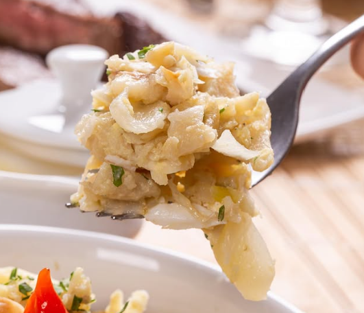
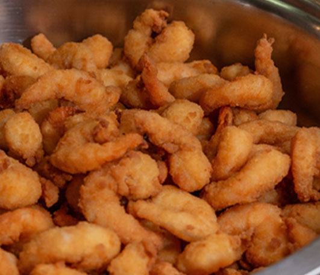
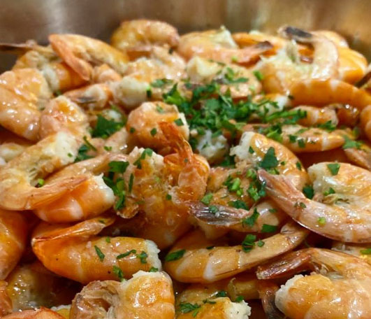
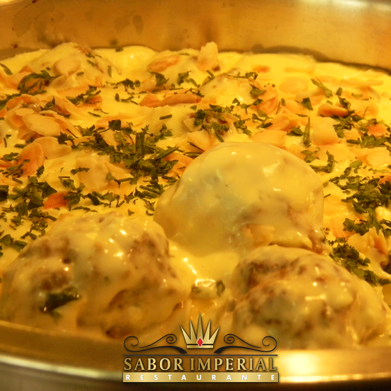
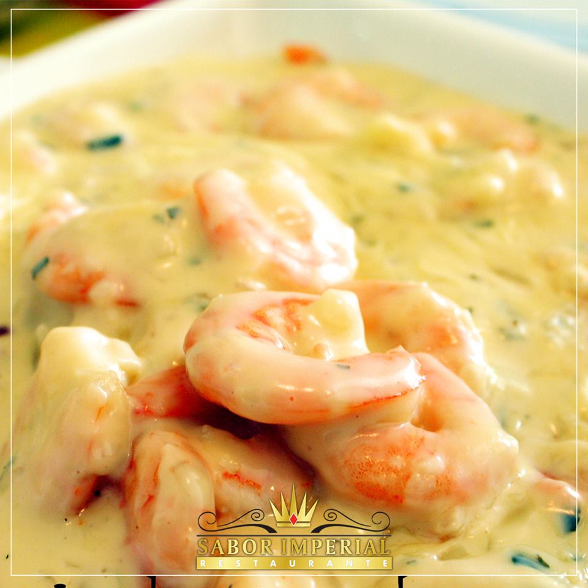
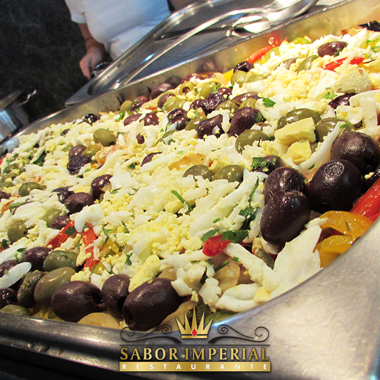

Peixes e Frutos do mar
Todos os dias uma grande variedade — uma opção gostosa e saudável.
Frutos do mar todos os dias, carnes nobres, mais de sessenta tipos de salada e a famosa mesa de sobremesas — servidos no coração de Blumenau.
Do bacalhau da segunda ao bacalhau à portuguesa do sábado — todos os dias um prato que é a estrela do buffet.






Com anos de tradição na gastronomia de Blumenau, o Sabor Imperial se consolidou como uma das principais referências em buffet da cidade — reconhecido pela qualidade, pela variedade e pela experiência completa que oferece aos seus clientes.
Mais do que um simples almoço, uma verdadeira experiência gastronômica: pratos leves e saudáveis, carnes nobres, frutos do mar selecionados e uma mesa de sobremesas frequentemente apontada como o ponto alto da casa.
Uma vida saudável requer hábitos saudáveis, começando pela alimentação. No Sabor Imperial, variedade e qualidade em cada detalhe.
Todos os dias uma grande variedade — uma opção gostosa e saudável.
Pratos tradicionais, carnes nobres, massas, molhos e sabores.
Cores, sabores e a famosa mesa de sobremesas da casa.
Avaliações reais de clientes no Google e Tripadvisor.
★★★★★"É, sem dúvida, o melhor buffet de Blumenau. A seleção e a variedade de saladas são impressionantes, e as proteínas são de altíssima qualidade."
★★★★★"O brownie cremoso servido quente é uma das melhores sobremesas que já experimentei na vida. As supermesas são uma delícia à parte."
★★★★★"O melhor buffet da cidade! O buffet é cobrado por quilo, mas é tão delicioso quanto refeições à la carte. Vale muito a pena."
Ambiente aconchegante e um buffet que agrada do paladar simples ao mais exigente.
O Sabor Imperial está entre os participantes do concurso que elege os melhores petiscos e pratos de Blumenau. Confira o prato concorrente da casa.
Rua Ângelo Dias, 251 · Centro · Blumenau - SC · CEP 89010-020
Segunda a sábado, das 11h às 14h. O melhor buffet de Blumenau espera por você.
{kind=link}
{kind=link}
{kind=link}
{kind=link}
{kind=link}
{kind=link}